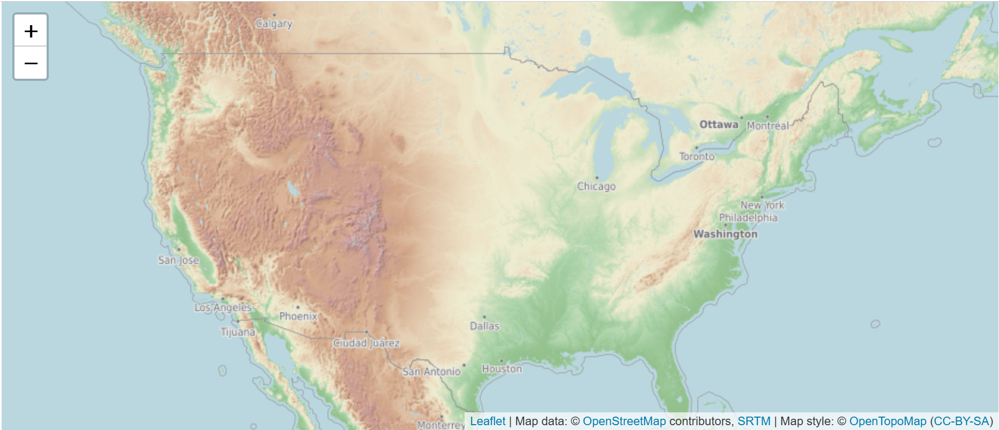
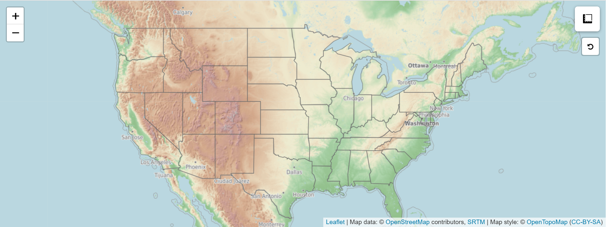

Leaflet
The Leaflet package in R is a powerful tool for creating interactive web maps directly from R code, leveraging the popular open-source JavaScript library Leaflet.js
(here).
It allows users to overlay data points, polygons, raster images, and other geospatial data on customizable basemaps, supporting features like zooming, panning, popups, color scales, and layer controls. Leaflet integrates seamlessly with spatial objects in R (e.g., sf, sp, raster, terra), making it especially useful for visualizing spatial data in R Shiny apps, reports, and dashboards.
This post shows how to create an interactive map in R shiny.
Install and import required pacakges
First, make sure you have the necessary packages installed:
# Please install these packages before import them.
# Load packages
library(shiny)
library(leaflet)
library(leaflet.providers)
library(leaflet.extras)leaflet.providers: enriches the Leaflet mapping experience in R by offering easy access to a wide variety of pre-configured basemap tile providers, such as OpenStreetMap, Esri, and CartoDB, allowing users to customize the visual style of their maps effortlessly.leaflet.extras” extends the functionality of the Leaflet package in R by providing additional interactive features like drawing tools, search boxes, heatmaps, minimaps, and reset buttons, enhancing the usability and interactivity of web maps.
Define UI and Server Logic
ui <- fluidPage(
leaflet::leafletOutput(outputId = "interactive_map")
)
server <- function(input, output, session) {
output$interactive_map <- renderLeaflet(
leaflet() %>%
leaflet::addProviderTiles(providers$OpenTopoMap,
options = providerTileOptions(opacity = 0.5)) %>%
leaflet::setView(lng = -95.5,
lat = 39.5,
zoom = 4)
)
}
shiny::shinyApp(ui = ui, server = server)renderLeaflet()tells Shiny how to build the map.addProviderTiles(providers$OpenTopoMap): Adds a custom basemap from OpenTopoMap with 50% transparency.leaflet()creates a blank map.setView()sets the map’s center and zoom level.
Here, the map is centered roughly in the central United States. When the app runs, a basic interactive map will appear in your browser. You can pan (drag) and zoom the map using your mouse.

Advanced Leaflet Map in Shiny: Layers, Tools, and Custom Controls
We’ll build a more advanced interactive map using Shiny and Leaflet in R. You’ll learn how to add custom map tiles, draw polygon layers, include measurement tools, add a reset button, and even handle tile loading errors gracefully.
You’ll also need a spatial dataset like state boundaries, which should be an sf or sp object representing US state borders. You can use your own or download one from a public source like the US Census TIGER/Line files. This tutorial shows how to import state boundaries using geojsonio package.
library(geojsonio)
state_boundaries <-
geojsonio::geojson_read("https://raw.githubusercontent.com/PublicaMundi/MappingAPI/master/data/geojson/us-states.json",
what = "sp")Let’s define advanced Leaflet interactive map.
ui <- fluidPage(
leaflet::leafletOutput(outputId = "interactive_map")
)
server <- function(input, output, session) {
output$interactive_map <- renderLeaflet(
leaflet() %>%
leaflet::addProviderTiles(providers$OpenTopoMap,
options = providerTileOptions(opacity = 0.5)) %>%
leaflet::setView(lng = -95.5,
lat = 39.5,
zoom = 4) %>%
leaflet::addPolygons(data = state_boundaries,
color = "dimgrey",
weight = 1,
opacity = 0.7,
fill = F) %>%
leaflet::addMeasure(
position = "topright",
primaryLengthUnit = "kilometers",
secondaryLengthUnit = "meters",
primaryAreaUnit = "sqmeters",
activeColor = "orange",
completedColor = "black"
) %>%
leaflet::addEasyButton(
easyButton(
position = "topright",
icon = "fa-undo",
title = "Reset to Initial View",
onClick = JS("
function(btn, map){
map.setView([39.5, -95.5], 4);
}
")
)
)
)
}
shiny::shinyApp(ui = ui, server = server)addProviderTiles(providers$OpenTopoMap): Adds a custom basemap from OpenTopoMap with 50% transparency.setView(): Centers the map at latitude 39.5 and longitude -95.5 (USA) with zoom level 4.addPolygons(): Adds a boundary layer (like US state borders) with grey lines. fill = FALSE makes it transparent inside.addMeasure(): Adds a measurement tool to the top-right corner for measuring distances (km/m) and areas (square meters).activeColor: is the color of the tool while drawing.completedColor: is the final color after finishing the measurement.
addEasyButton(): Adds a simple reset button with an undo icon. When clicked, it resets the map view to the original center and zoom.
The final result is as follows (screenshot):

×